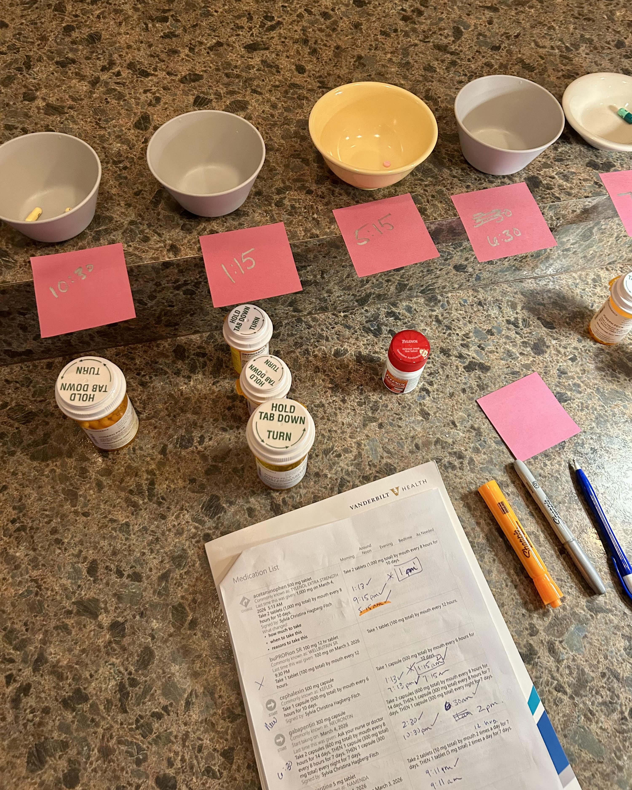
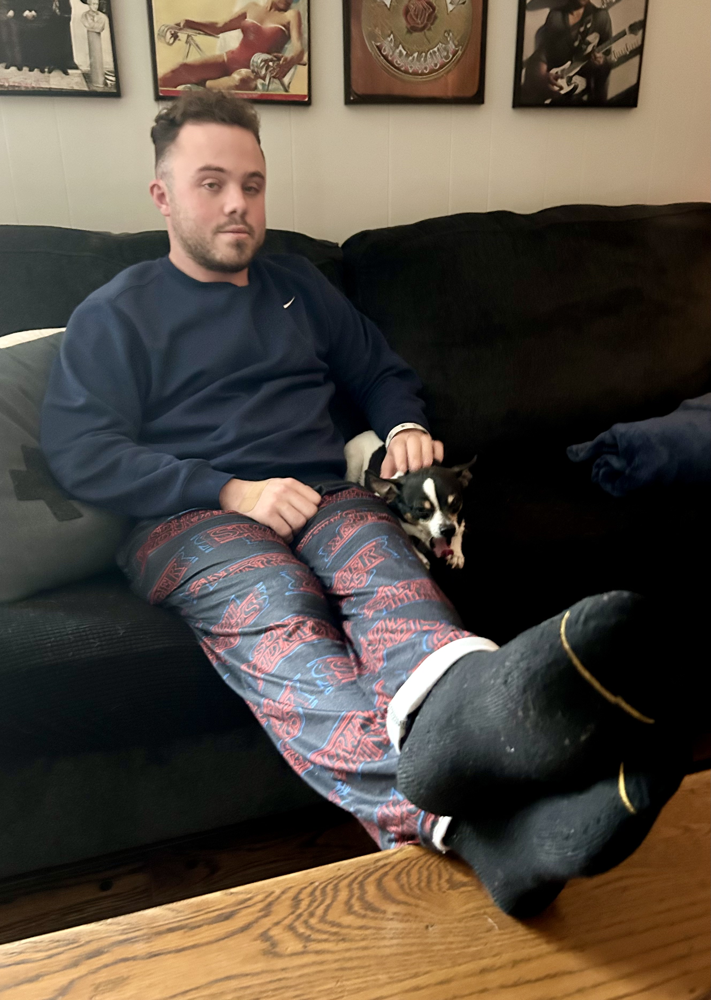
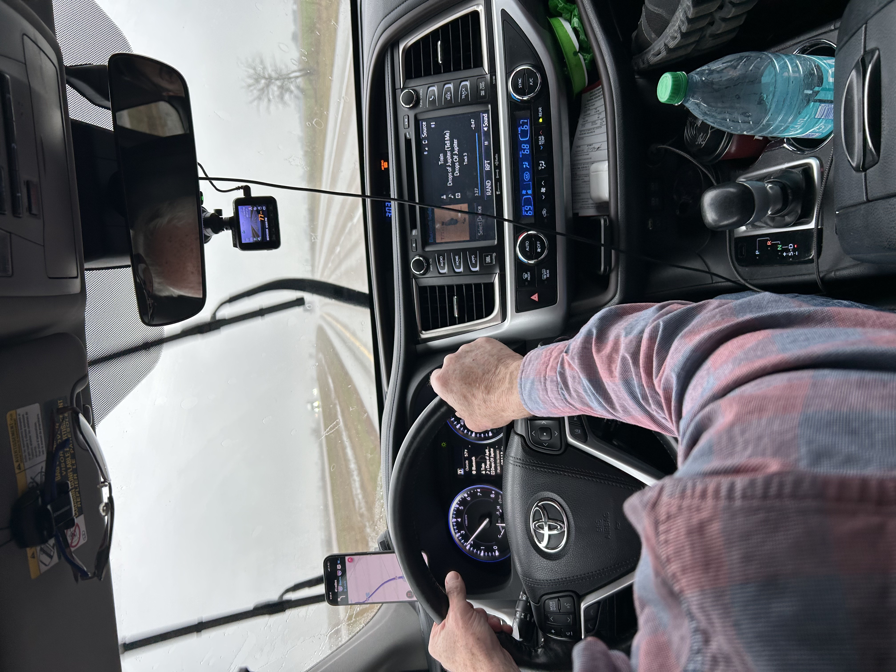
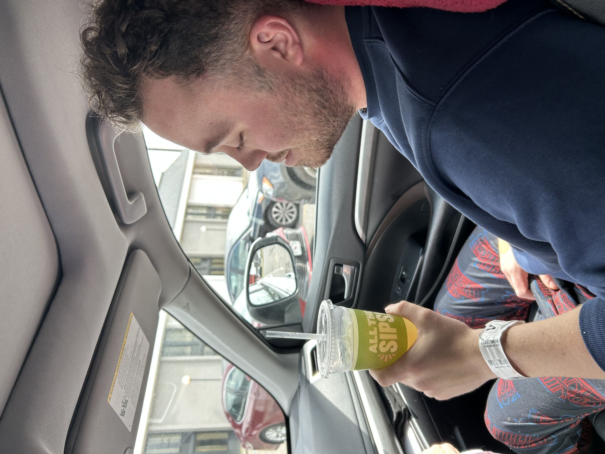
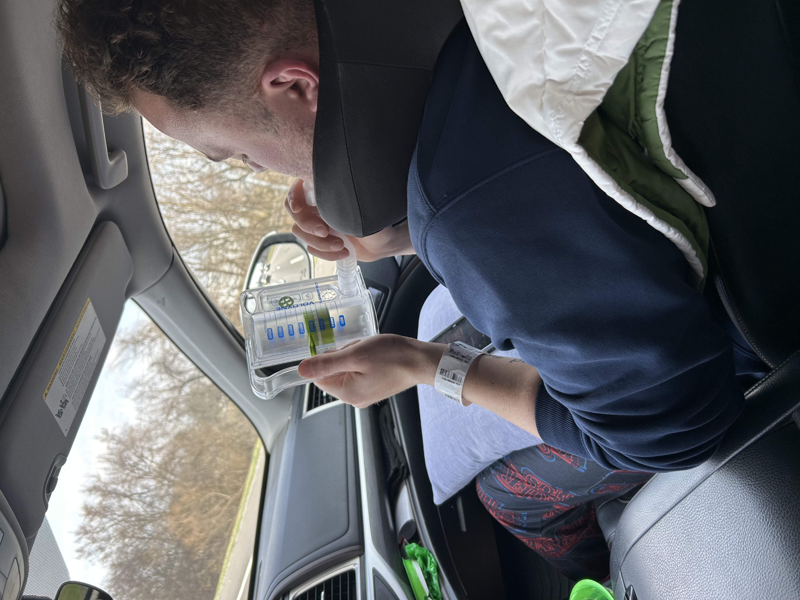
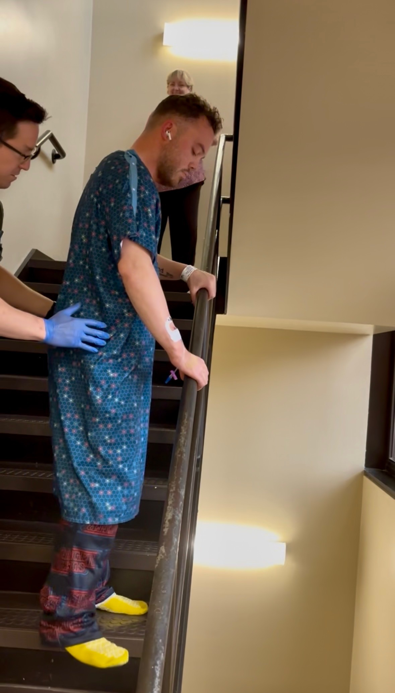
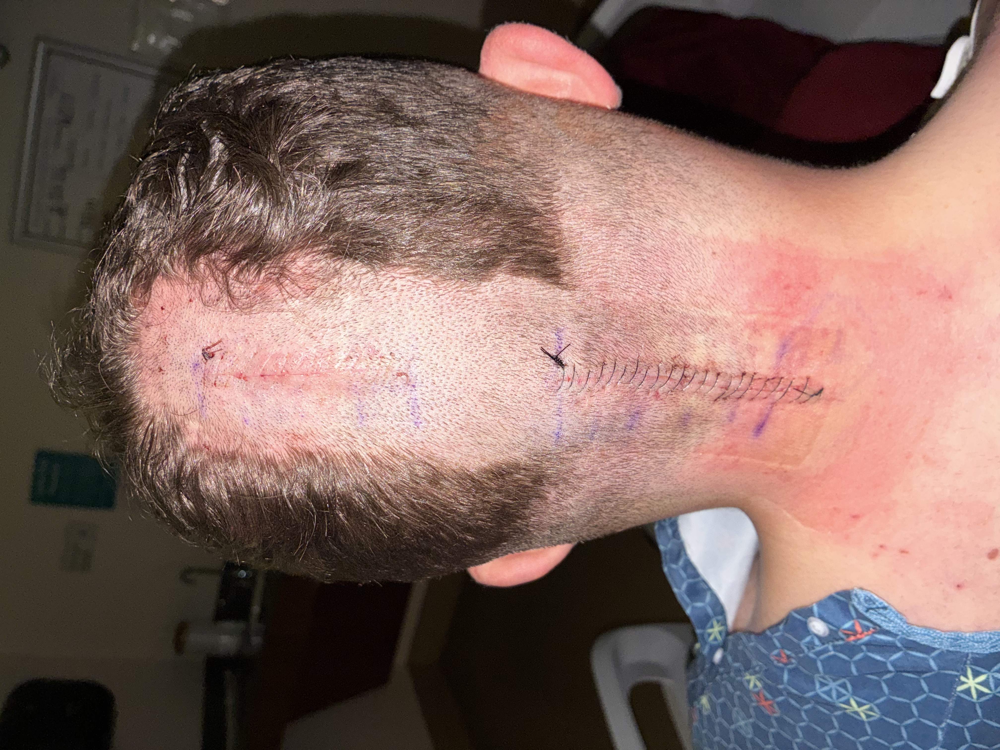
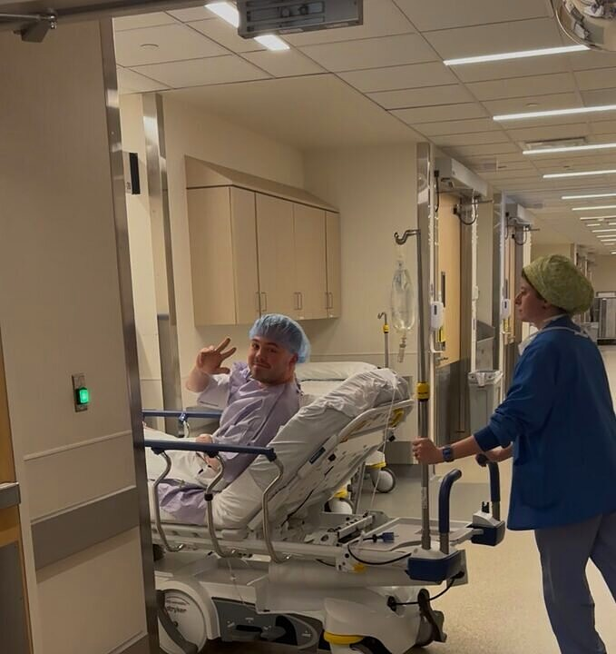
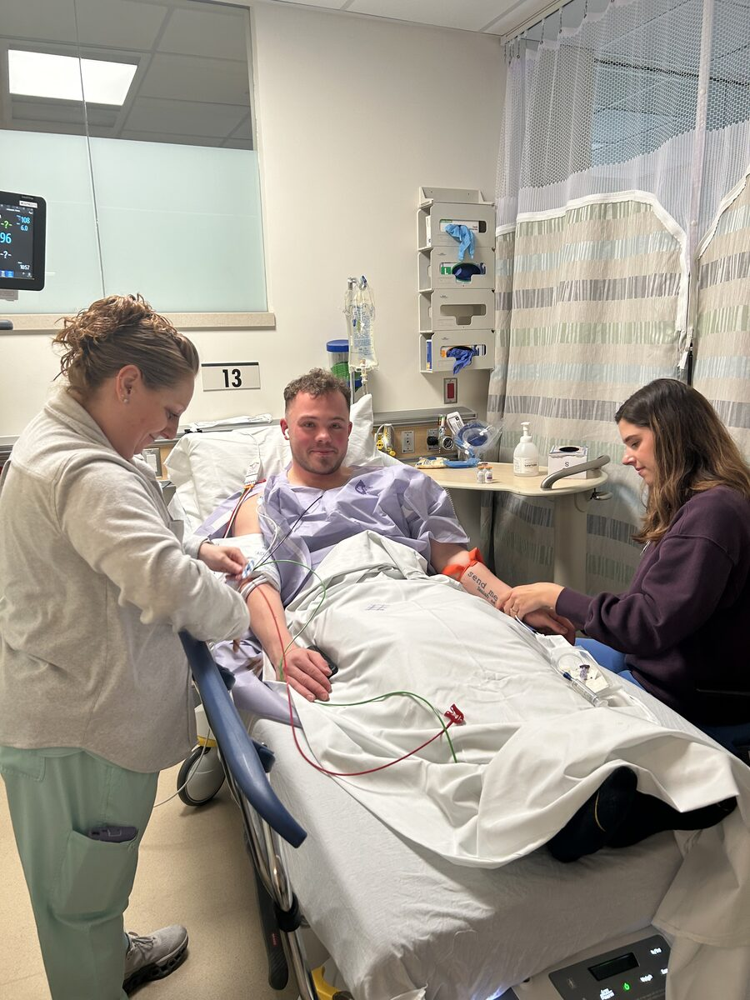

Wednesday, March 4, 2026 — Post-Op Day 6
Home. Nine Meds. Math Is Hard.
Nine prescriptions. Mom lined them up in bowls, labeled the times on pink Post-it notes, and made sure he knew what to take when. Math is hard after brain surgery. Moms aren't.

March 4, 2026. Mom's system. Nine meds.
The Eagle Has Landed.
Joe is home. Six days after brain surgery, nine prescriptions deep, and a five-hour drive through two states of rain and rough road — he made it. The eagle has landed.

March 4, 2026 — Home.
Rain and Rough Roads in Illinois.
Pouring rain in Illinois. The rough road isn't doing any favors for Joe's neck muscles. Still pushing through.

March 4, 2026 — Illinois. Every bump counts six days post-op.
Quick Stop. Tylenol Run.
Pulled over again for a walk and to grab some extra-strength Tylenol — Vanderbilt didn't include it in the bushel of meds they sent home. Also took Oxy and a muscle relaxer. Listening to Joe's playlist. Drive is going fine.
Pit Stop in Paducah.
Pulled off in Paducah for a break — a stretch and a sip. Still moving. Still comfortable.

March 4, 2026 — Paducah, KY. A stretch and a sip.
Out of the Hospital. Into Kentucky.
Left the hospital earlier today with nine prescriptions — including Narcan, just in case. That's the world of post-op neurosurgery: you plan for the best, and you pack for the worst.
Just crossed into Kentucky. Joe is doing well — comfortable, resting, and heading home. The road ahead is long, but it's pointing in the right direction.

March 4, 2026 — On the road. Headed home.
Tuesday, March 3, 2026 — Post-Op Day 5
Still Sleeping.
Still sleeping. 💤
Slept Through Lunch.
Joe was tired and slept through lunch. The body knows what it needs.
OT/PT Evaluated. Safe to Go Home.
Visited by OT/PT who evaluated Joe's condition to get a baseline before release. They noted his guarded gait as he walked. Assessed his radial range and measured his proprioception — kinesthetic memory. Conclusion: safe to ambulate. Walker with handrails at wrist crease.
Joe also walked up and down a flight of stairs with their assistance. All motor functions appear intact.

No Inpatient Rehab. He's Going Home.
The neurosurgeon who performed Joe's procedure informed the family that post-op therapy does not need to be inpatient — it can be done at home. A significant change of course. Plans had been in motion for extended-stay quarters for mom and dad. That chapter just closed. He's going home.
Monday, March 2, 2026 — Post-Op Day 4
Decision Made. Vanderbilt Stallworth.
Out of the four facilities the case manager presented, the family chose Vanderbilt Physical Medicine and Rehabilitation at Stallworth. It's on the Vanderbilt campus — familiar ground, known staff, and walkable from where family will be staying in case the car situation gets complicated.
Sometimes the right call is the one that just makes logistical sense.
Four Rehab Options on the Table.
Case manager stopped by with a concrete plan: four inpatient rehab facilities in the Nashville area, each offering 7–10 days of physical and occupational therapy. Joe's team will need to choose one.
Mom and dad are working through what comes next — logistics, timing, who's where. That conversation is happening now.
Cleared. Moved. Walking. Company.
Nursing team took vitals and ran a full neurological exam. Everything looked good. Joe was moved from the ICU step-down room to a standard recovery room on the same floor
— a quiet milestone.
He walked. You can see it below.
Later in the afternoon, Doug Condidorio — a friend from his men's church group — came by. Good fellowship. Good prayer. The kind of company that actually helps.
Pain Is Still Here. But It's Shifting.
The pain hasn't gone anywhere. But it's becoming more manageable — and that counts.
Spirits are high. The goal is still out there: move, run, do the things. That day is coming.
Incision Cleaned for the First Time.
Nurse cleaned the incision site this morning. The ice pack was removed — there was some redness, not on the incision itself, but in the surrounding area. Unexpected, but being monitored.
Neurology Did Rounds.
The neurology team came through early. Expecting to hear back around 10 AM with a plan for a potential 10-day inpatient OT/PT stay. That meeting is coming.
Both parents will be here for it — along with breakfast, which is maybe the more anticipated arrival.
Getting Up Is Still a Process.
Using the restroom is becoming easier. But standing up still brings dizziness — and something harder to name. An unmoored feeling. Like the body hasn't fully caught up to where it is yet.
Sunday, March 1, 2026 — Post-Op Day 3
The Watchmen.
Joined a men's Bible study call — The Watchmen. Tonight's topic was Noah getting drunk after the flood. How Hollywood handles it. Why the text matters.
Good conversation to be part of from a hospital bed.
The Hiccup Thing.
Got a case of the hiccups. His nurse came in and pressed two fingers on either side of his chest, just below the neck — right at the top, not on the throat. The hiccups stopped.
She was hitting the nerves in a way that just cut them off. Worth knowing.
MRI Results Are In. No Tethered Cord.
MRI came back clean. No tethered cord — the spinal cord is floating freely, exactly as it should be.
The only notable finding was mild early degenerative disc change at L5/S1, minor and not a concern right now. One less unknown.
Off to MRI. Checking for Tethered Cord.
Heading down for an MRI to check whether the spinal cord is tethered. The neurosurgeon has kept Joe's head at 30 degrees or above since surgery — so being inside the MRI machine, lying flat for the first time in days, felt like a small gift.
He said it was more comfortable than expected. The MRI itself went fine.
Off the Drips. Oral Meds In.
All IV drip medications stopped. New oral meds administered to find what's needed to keep the sharp stabbing pain out of the 9–10 range.
Another Lap Around the Floor.
Joe's nurse had him walk another lap around the floor.
MRI Scheduled. Checking the Lower Cord.
MRI scheduled for 3:00 PM today to assess the lower spinal cord. The team is checking whether the cord is tethered — meaning abnormally attached to surrounding tissue — when it should be free-floating. If confirmed, it could help explain additional symptoms beyond the Chiari.
Walked a Lap Around the Floor.
With help from his shift nurse and mama, Joe walked a full lap around the floor — no dizziness, no sharp pain. Third day post-op and he's moving.
Neurosurgery Came By.
Visit from the neurosurgery department — pain assessment, incision inspection. Decision made to remove all drip medications and transition to oral pain meds and muscle relaxers.
Current Situation.
From Joe's dad — "current situation."
Blood Drawn for Lab Work.
Blood drawn for lab work.
Discussions included the non-stop flow of helicopter landings and takeoffs last night.
Vanderbilt Medical Center has a trauma center that serves the needs of many from afar.
The outpouring of concern, love, and support from friends, family, and neighbors has been incredible. It is good to be able to share good news of Joe's progress.
"The scriptures tell us to cast our burdens upon the Lord — and that's what Joe, Mom, and Dad have done. All is well. We will greet each day with peace."
— Joe's family
Mom Staged Breakfast.
Mom helped get breakfast staged on the tray to make eating easier.
Pain Team Adjusting Meds.
The pain team stopped the Lidocaine and will titrate the other meds to replace the Lidocaine and Ketamine.
Friends From Stonebridge Church.
Friends from Stonebridge Church stopped by for a visit and shared some laughs.
February 28, 2026 — Post-Op Day 2
The Easter Card. He Read Every Word.
The nurse asked if Joe was having any trouble with his vision. He picked up an Easter Sunday invitation from his church — the Ryman Theater — and read the whole thing out loud. Every line. It was a description of the death and resurrection of Jesus Christ.
Nobody said anything about vision testing. That was just Joe. A little coy, a little deliberate — sneaking in what he believes the same way he does everything: without making a big deal about it. The nurse got the reading. And the gospel.
The card. He read every word.
Neurosurgeons Order MRI. Possible Tethered Cord.
The neurosurgical team has ordered an MRI to rule out a tethered spinal cord — a condition where the spinal cord becomes abnormally attached to surrounding tissue instead of floating freely as it should.
The hypothesis on the table: a tethered cord can pull the spinal cord downward, which may contribute to — or worsen — the downward displacement of the cerebellar tonsils that caused the Chiari in the first place. If the cord is tethered, it could help explain symptoms Joe has been dealing with that the decompression alone may not resolve.
This is not a confirmed finding. The MRI will tell them what they're actually dealing with.
Unwrapped. Alive. A Little Bit Frankenstein.
Headwrap came off this afternoon. Doctors say removing it should take some pressure off and help with the pain. The view from the back of his head? Staples, incision line, the whole nine. Frankenstein's got nothing on him.

Pain Team In. Regimen Holds.
Pain Team physicians assessed Joe and determined he needs to stay on the full current protocol — Ketamine, Lidocaine, Oxycodone, and Gabapentin — to keep the pain manageable. No changes to the regimen.
Goal going forward: get up and walk four times a day.
He Got Up. He Walked.
PT and OT came back on Day 2 and got Joe out of bed — walked the floor, then put him in a chair for a bit. First time on his feet since surgery.
Discharge planning is underway. Primary plan is returning to his mom and dad's house. A short-term rehab stay will depend on what therapy recommends.

Through All of It — Peace.
Pain at an eight or nine. A neck that won't turn. A bladder that won't cooperate. Oxygen that dipped. Conversations about possible additional spinal issues.
And still — peace.
I've shared the gospel multiple times from this bed already. That part isn't hard when you're lying here unable to turn your head. People notice when someone should be falling apart... and isn't.
Also — the ice cream situation is going extremely well. Vanilla. Obviously.
Family Arrives. Visitors Throughout the Day.
Family in at 8. Grace confirmed this floor runs looser than the ICU — more than two visitors is fine as long as it stays manageable. Joe had asked for the lights off before they came. Small thing. It says something about where his baseline comfort is right now.
Pain Climbing. Oxy Requested. Neck Won't Move.
Pain sitting at an 8 or 9 as the morning started, concentrated in the back of the neck. Joe asked for Oxy at 7 as it was picking up. He still can't rotate his head at all — he's been asking staff to stand directly in front of him when they talk. He wants to look people in the face. That matters to him.
Second Cath of the Night. Small Mercies at 6 AM.
Bladder still not cooperating on its own. Second straight catheterization of the night at 6 AM. The first one earlier in the stay had some difficulty — this one went smoothly. Matt made that clear. Small mercies matter at 6 in the morning.
Slept Through the Night. More Alert This Morning.
Joe said he was able to sleep throughout the night — a meaningful improvement. He came into the morning more alert and responsive than the day before. The consistent painkiller regimen played a big ro
le in letting him actually rest.
MRI Proposed. Joe Said No — For Now.
The team wants an MRI of the lumbar spine to check for a tethered cord, which could explain the syrinx. Joe declined — specifically because his pain is not controlled right now. Not a blanket refusal
. His position: manage the pain first, then have the imaging conversation.
He asked Grace to bring Dr. Potter in. If a tethered cord is found, Joe needs to understand the actual plan — including whether another surgery is on the table — before consenting to anything further. That conversation has to happen first.
Neuro Check. Oriented Times Three.
Grace ran the standard neurological assessment: grip strength, hand pulls, eye tracking, orientation questions. Joe correctly identified his name, location — 6th floor, Vanderbilt
— and the year. He noted he keeps wanting to say 2025. Relatable in the fog. Oriented times three.
Blood sugar came in at 136. Not alarming, but worth tracking given the post-surgical stress response. Oxygen dropped when he tried to get up yesterday, so he's staying in bed until PT and OT arrive to evaluate him today. There's talk of a 10-day inpatient stay — that's a lot to process from a hospital bed.
Shift Change. Matt Out. Grace In.
Matt came off a solid night shift. There was roughly a 20-minute gap in coverage — charge nurse held the floor while Grace was in transit. The unit had some chaos overnight with another patient, but the staff handled it without it touching Joe's care.
Matt is back tonight for another shift. Joe is genuinely glad about that. They've built some rapport, and continuity matters when you can't turn your head and you're asking people to stand in front of you to hold a conversation.
IV Pump Alarmed. Lidocaine Nearing Completion.
The IV pump alarmed overnight due to an occlusion in the lidocaine infusion line. Nursing assessed and corrected the issue. A bag of IV fluids was available to start, but Joe alrea
dy has two IV lines in place. Since the lidocaine was ordered for 24 hours and is nearing completion, the team opted not to place a third line.
The ketamine infusion remains active and is ordered for 48 hours.
February 27, 2026 — Day After Surgery
Shift Change. Neuro Check Passed.
Nursing shift change brings in a new care team for the next 12-hour shift. Neurological assessment completed — similar to what's done to check for stroke symptoms. All is good.
Ice Machine Restocked. Third Time Today.
Fresh batch of cold cubes for the third time today. The small things matter in recovery.
Full Meal. Real Food.
Joe eats a full meal — chicken, rice, carrots, green beans, a roll. And a piece of cheese pizza. Less than 24 hours after brain surgery. That's the combat medic in him.
Zipper Head.
After settling into the new room, Joe's new care team meets with the ICU nurse to exchange notes. Nurses inspected the bandaging on the back of his head — a.k.a. the zipper.
Dad calls Joe by his new nickname: Zipper Head.

The zipper. Proof he made it through.
Moved to Neuro Step-Down.
Transport from the Neuro ICU to the Neuro Step-Down Unit completed. Out of the ICU — that's forward progress. New nurse had a great shirt on.

New nurse, new unit, same mission.
Wonder Woman Returns.
After an afternoon spent with Dad, Mom returns from a well-deserved hotel nap — refreshed and looking for an update. She spent last night with Joe in the room while Dad got a few hours of sleep at the hotel. By the way, she walked several blocks from the hotel back to the hospital.
Joe calls Mom "Wonder Woman" for being with him all last night.
Bladder Check. In-and-Out Cath.
Attempt to urinate fell short. In-and-out catheter method used to drain the bladder. Standard post-op — the body's still waking up from six hours under.
A Friend from Church Came by.
Visited by a friend from church. Warm and real. The conversation turned to being close to Christ in our weakest times — the kind of thing you can only talk about honestly from a hospital bed.
Ketamine Is Working. Pain Coming Down.
As of 12:45 PM, the Ketamine drip was doing its job well enough to bring the pain down from a 10 to an 8. Not comfortable — but movement in the right direction.
Catheter Used After Multiple Attempts.
After several attempts to empty his bladder on his own, the team used a catheter at 11:50 AM. Urinary retention is a known side effect of the opioids and anesthesia used in major surgeries like this. Routine intervention — the team handled it.
PT and OT Both Visited. Ten Days Recommended.
Both the physical and occupational therapy teams came by at 11:05 AM and recommended 10 days of in-patient care. They tried to do a physical evaluation — getting him up and out of bed — but he was either too weak or too relaxed from the Ketamine to manage it. They came back the next day to try again.
Case Manager Recommends In-Patient Rehab.
The case manager stopped by at 10:30 AM and recommended in-patient physical and occupational therapy. The team was already thinking about what came after the ICU.
Ketamine and Lidocaine Drip Started.
The ICU nurse started a Ketamine and Lidocaine drip at 10:05 AM. Both are used for complex post-surgical pain — this was a serious pain management protocol, not a light touch. They meant business.
Pain Team Has a Plan.
The pain management team visited at 9:05 AM. Their care plan was sent to the surgeon for approval. It was in motion — they weren't waiting on it.
Neurosurgeon Confirms Successful Outcome.
Dr. Lee came by for rounds at 8:15 AM. He confirmed the surgery was a success and acknowledged that Joe's pain needed to be better controlled. The hard part wasn't the surgery — it was managing what came after it.
February 26, 2026 — Surgery Day
Settled in the Neuro ICU.
From Joe's mom: "He is settled into his ICU room. Just got a cocktail of pain meds and hopefully will be resting somewhat comfortably soon. He's got four beautiful women helping him through the night with hourly check ins. His nurse is Abby, his grandma Peck's name. He told her it is a beautiful name. Very sweet. ❤️"
"Doctors rounds are around 8 tomorrow. We'll update then."
He's Awake.i
From Joe's mom: "Yes he's awake and being very sweet. Wants all the nurses to know they're doing a great job. Called them angels and told me I'm beautiful."
Six hours of brain surgery and he woke up giving out compliments. That was Peck.
"For I know the plans I have for you, declares the Lord, plans to prosper you and not to harm you, plans to give you hope and a future."
— Jeremiah 29:11
His Family Has Seen Him.i
Out of PACU, into the ICU. His family was with him. That was the moment the whole day had been building toward.

February 26, 2026 — ICU, Vanderbilt University Medical Center
In Recovery. Coming Back Up.i
Out of PACU and into the ICU. He made it through recovery. His family was with him.
Closing.i
An update from Joe's mom: "They just called and said they've started the closing process. It's still going to be a little while though."
That was the call everyone had been waiting for. The hard part was done. They were closing him up — layering back everything
they'd opened, one stitch at a time.
What the Surgery Just Accomplished
Before & After — The Fluid That Was Blocked.
CSF — cerebrospinal fluid — circulates in a continuous loop around your brain and spinal cord. His herniation has been damming that flow since birth. Every symptom, every limitation, every moment he thought was a personal failing — it was fluid mechanics. The surgery reopened the drain. The nervous system does the rest over time.
Flow restored today · Nervous system adapts over weeks and months · Most patients see real improvement within 3–6 months · He's going to be different on the other side of this
Still In There.
7:45 PM — Procedure still in progress. Six hours under and counting. The team was still working. That waiting room hadn't moved. Neither had we.
The People He Serves Were Praying Him Through.
While Joe was on the table at Vanderbilt, his Uncle David shared what Joe means to Message & Meal — a street ministry in downtown St. Louis where Joe helps feed and serve the homeless. Then one of the volunteer team lifted him up in prayer, right there on the spot. Four hours into brain surgery, and the people he pours into were pouring back.
Four Hours In. Still Going.i
6:30 PM — Procedure still in progress. His family had been in that waiting room since noon. That was the hour that tested everyone — and it was supposed to feel that long.
Deep In. The Slow Part.i
Two and a half hours in. This was the duraplasty — the part that takes time on purpose. Each stitch placed under magnification. No updates right then wasn't a bad sign. It meant the team was doing exactly what they were supposed to do.
An update from Joe's mom: "Just received an update via text. Procedure is still underway. Patient is doing well."
Surgery Is Underway.i
An update from Joe's mom — The RN called to say surgery was underway and moving right along. When they met with him before Joe's surgery, he explained how complex and precise the procedure is — even n
oting that once accessed, you can see the brain's natural pulsation — a humbling reminder of how intricate God's design truly is. The RN called it "gnarly."
What Dr. Lee Is Doing Right Now
Three Steps. One Goal. Six Hours.
It's not complicated — it's just precise. Remove the bone that's in the way. Extend the decompression down through C1. Then patch open the dura so the fluid can actually move. Each step builds on the last. The goal the whole time is simple: more room.
Step 01
Suboccipital Craniectomy
A section of the lower skull is removed to widen the passage. The bone at the back of the head — the occiput — has been narrowing his brainstem's exit his entire life.
Step 02
C1 Laminectomy
The posterior arch of the first cervical vertebra is removed. This extends the decompression downward — the spinal canal is now fully open at the junction where the brainstem meets the cord.
Step 03 — The Long One
Duraplasty
The dura mater — the tough outer membrane encasing the brain and spinal cord — is carefully opened. A patch graft is sutured in under magnification, expanding the space and allowing CSF to flow freely. Every stitch must be watertight. This phase alone runs 1–2 hours. This is where the six hours comes from.
Each suture placed under magnification · Must be watertight · CSF leak is the complication most avoided · When closing begins, his family gets a text
The Doors Close.
The doors closed at 1:55 PM. He was on the other side. Family was in the waiting room. The work began.
A Word from the Resident Before He Went In.
While they were waiting, the resident surgeon came by to confirm that Joe had been told recovery is especially painful. They wanted him to know — and they wanted his family to know — that they'd keep him medicated and in the ICU until his pain was reasonably under control. They weren't rushing that part. He was in good hands.
The Diagnosis — What's Being Fixed
15mm. That's What This Is.
The cerebellar tonsils have slipped 15mm below the skull into the spinal canal. Normal is 0–5mm. His brainstem has been compressed at that bottleneck his entire life — the swallowing issues, the balance problems, the coordination stuff, the headaches when he coughed. Every single one traces back to this point. Dr. Lee is fixing it right now.
Sagittal cross-section · 15mm confirmed on MRI · Normal range is 0–5mm · Every symptom on the right traced to this single point · That bottleneck is being opened right now
Taken Back to the OR.i
1:24 PM. He was through the doors. His family said "See you soon!" — and he went in throwing a peace sign. That was Peck.
"Be strong and courageous. Do not be frightened and do not be dismayed, for the Lord your God is with you wherever you go."
— Joshua 1:9
What He Said at the Doors.i
His mom: "His nurse said he would call me every hour. Joe gave a peace sign as they rolled him away."
That was it. That was his goodbye. A peace sign.

February 26, 2026 — The last thing he did before going through
Getting Ready to Roll.i
His mom: "Getting ready to roll, nurse anesthetist giving him the good stuff."
That was it. The anesthesia was going in. He was on his way through those doors.
Waiting on Dr. Lee.i
All pre-op work was done. Joe was ready. Dr. Lee was finishing up another case — the moment he was free, Joe headed toward surgery. Hurry up and wait. He was right there.
Met the Anesthesiologist.i
IVAC came by at 10:56. Walked him through everything — agents, airway, how they'd bring him up afterward. Joe knew what all of it meant. He'd cared for patients in exactly this position. That day he was the patient. Nurses were prepping him.
In Pre-Op.i
IV in. Vitals running. The anesthesia team had been by. That was the last hour before everything changed. Family was still right there.
What the Waiting Room Looks Like Today.

February 26, 2026 — Vanderbilt University Medical Center
Joe getting his IV in. Nervous smile, optimistic eyes. This is the moment right before everything starts.
Checked In. Two Hours Out.i
Checked in at 10:38. They asked him the same questions he'd already answered twice — that's by design, not incompetence. Family was still with him. They stayed until the OR doors.
Arriving at Vanderbilt.i
He was there. 10:15 AM. The address he'd had in his head for weeks was now a building he was walking into. Family was with him. Two hours until they called him back.
His Thoughts This Morning.
This morning, my thoughts keep returning to the goodness of God.
I was talking to one of the older men in my life, and I made a joke about Paul — about how Paul never got his thorn removed. And I just keep thinking: I'm lucky. Today is the first day of the rest of my life. Today, my thorn gets removed. The praise I have for the Lord right now… I'm just struck by His goodness.
I don't know how tomorrow looks. I don't know how meeting the new Joe looks. I've never met that Joe. But I'm excited. I'm genuinely excited to meet who's on the other side of this.
Is there worry? Yeah. Probably. But one of the older women in my life encouraged me to share my faith with my doctors — maybe even ask them to play worship music during surgery. My gut reaction to both was no. But then I thought — why wouldn't I share the gospel with them? If God is the great physician, I'm sure He'll protect me. So why wouldn't I? I think we all need to be in bold pursuit of our faith.
Today is the first day of the rest of my life. The Lord is removing a thorn I've carried for years — a thorn Paul never got the chance to have removed. I have my family close. I have friends who've reached out. I've made more connections in the last few days than I think I ever have, and I've had more prayers spoken over me than at any point in my life. I'm closer to the Lord than I've ever been.
This might look like a storm from the outside, but I don't even experience it as one — because I have a Lord. I'm so content that I keep asking myself: is this really a storm? And yet, I'm getting brain surgery in less than three hours. And it's okay. Because we have peace in the Lord.
I've been going through Genesis this past week, and something stood out to me — the first thing Noah did when he stepped off the ark was build an altar. He worshipped. And I think that's the posture we're always called back to. I can't promise you that the first thing I do coming out of anesthesia will be to praise the Lord — last time I went under, I woke up swinging at the doctors — but one of my prayers today is that the first breath out of my lungs is a prayer. That He brought me through. That this is the first day of the rest of my life.
There's so much on my mind. But there's also so much contentment. I can't wait to see what the Lord does.
If you're reading this — thank you. I love you. And honestly, I've got the easy job today. Jonah's got the hard job, keeping this blog updated as the day unfolds. It might be one of the most detailed real-time surgery journals out there, and I hope you feel what I intended when I set this page up — that you're here with me. Through prayer, through understanding, through love.
We live in a remarkable time. The connections I've made over the last ten days, the prayers coming in from people near and far — none of this would've been possible a hundred years ago. And I don't take that lightly.
So as I close this: there is so much gratitude. So much thanks. But I also want to be honest — it's not easy. I'm not saying I doubt. But it's not easy.
That's it. That's me. That's Peck.
"And we know that for those who love God all things work together for good, for those who are called according to his purpose."
— Romans 8:28
Leave a thought